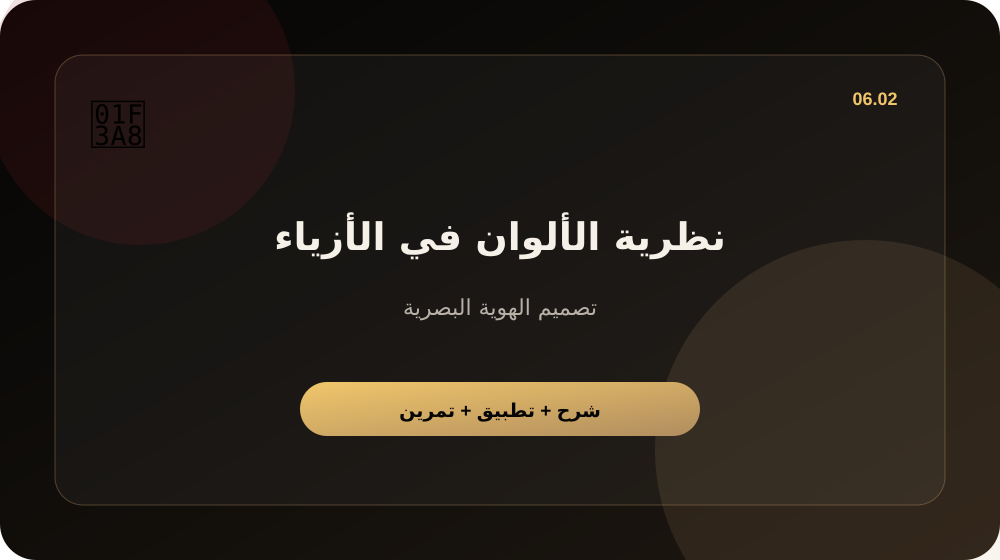

نظرية الألوان في الأزياء

محتوى الدرس المكتوب
هذا درس مكتوب بالكامل من وحدة تصميم الهوية البصرية. الهدف منه أن تفهم موضوع نظرية الألوان في الأزياء بطريقة عملية، ثم تطبقه مباشرة على براند الملابس الذي تبنيه. لا يعتمد هذا الدرس على المشاهدة أو الشرح المصوّر؛ كل الشرح هنا مكتوب ومدعوم بصور تعليمية وتمارين قابلة للتنفيذ.
لماذا هذا الدرس مهم؟
التصميم الناجح لا يبدأ من شكل جميل فقط؛ يبدأ من نظام بصري واضح. عندما تكون الهوية، الألوان، الخطوط، والمراجع متماسكة، يصبح البراند أكثر ثقة وتصبح كل قطعة وكل بوست جزءاً من عالم واحد.
الفكرة الأساسية
الفكرة ليست أن تجمع معلومات كثيرة، بل أن تحول هذا الدرس إلى قرار عملي. اسأل نفسك أثناء القراءة: ما الشيء الذي سيتغير في براندي بعد تطبيق هذا الدرس؟ إذا لم يغير الدرس قراراً أو خطوة، أعد قراءة القسم العملي واكتب مخرجاً واضحاً.
خطوات التطبيق
- اجمع 10 مراجع بصرية تعبر عن الإحساس المطلوب.
- استخرج 3 ألوان رئيسية و2 ألوان مساعدة.
- حدد نوع الخطوط والأسلوب: جريء، minimal، street، luxury، techwear.
- حوّل القصة إلى عناصر تصميم: رموز، كلمات، Patterns، وMockups.
- اختبر الهوية على تيشيرت، هودي، بوست إنستغرام، وصفحة منتج.
مثال عملي
إذا كان البراند عن الثبات تحت الضغط، يمكن استخدام كلمات قصيرة، خطوط قوية، ألوان داكنة، خامات ثقيلة، وتصاميم تحمل إحساس الصمود بدل الرسومات العشوائية.
برومبت جاهز للتطبيق
اصنع لي اتجاه هوية بصرية لبراند ملابس. القصة: [القصة]. الجمهور: [الجمهور]. أعطني: ألوان، خطوط، Moodboard، رموز بصرية، أفكار تصاميم، وطريقة استخدامها على المنتجات.أخطاء شائعة يجب تجنبها
- تطبيق الدرس بشكل عام بدون ربطه بجمهورك الحقيقي.
- نسخ أفكار المنافسين بدل فهم سبب نجاحهم وتطوير زاوية مختلفة.
- الانتقال للدرس التالي قبل استخراج مخرج عملي من هذا الدرس.
- الاكتفاء بنتيجة أولى من أدوات الذكاء الاصطناعي بدون مراجعة وتحسين.
قائمة تحقق قبل الانتقال للدرس التالي
- هل خرجت من الدرس بمخرج مكتوب أو قرار واضح؟
- هل طبّقت الفكرة على براندك وليس بشكل عام؟
- هل حفظت النتيجة في ملف عملك للرجوع لها لاحقاً؟
- هل تستطيع استخدام الناتج في صفحة بيع، إعلان، أو محتوى سوشيال؟
اكتب صفحة واحدة فقط بعنوان: تطبيق درس نظرية الألوان في الأزياء على براندي. ابدأ بجملة تلخص الفكرة، ثم اكتب 3 قرارات ستطبقها، ثم استخدم البرومبت المرفق وأضف الناتج إلى ملف عملك.